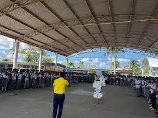

HISTORIA
Colegio de Bachilleres de Tabasco Plantel 20 se fundó a principios del mes de
septiembre del año de 1982, inicio en aulas de la escuela “Escuadrón 201” se hizo cargo
de manera provisional el Prof. Leopoldo Cruz Marín, seguidamente lo instituyo el Dr. Walter
Vázquez López, durante la dirección de este último se notó mucha apatía, lo suplió el Prof.
Fernando Puch Cambranis, quien se dedicó con mucho esmero en fortalecer los trabajos de este
plantel. Como ere necesario que la dirección estuviese en manos de un profesionista
universitario, paso la dirección al Dr. Antonio Fuentes Zamudio quien trabajo un año y lo
sustituyo la Lic. Profa. Lilia Razo Díaz, actual directora, quien ha sabido resolver con
certeza los problemas que con razón o sin razón siempre se presentan. Su trabajo es posible
saliendo a la luz el progreso de esta Institución en todos los aspectos sintiendo día con
día también el esfuerzo sin par de todos sus colaboradores. Hoy este Colegio cuenta con
local Propio, la primera etapa fue construida en terreno municipal, entre las calles
Emiliano Zapata y Vicente Guerrero y fue inaugurada el 21 de abril del años de 1985 por el
C. José S. Dagdug Jabihala, Presidente Municipal de Comalcalco Tab.
